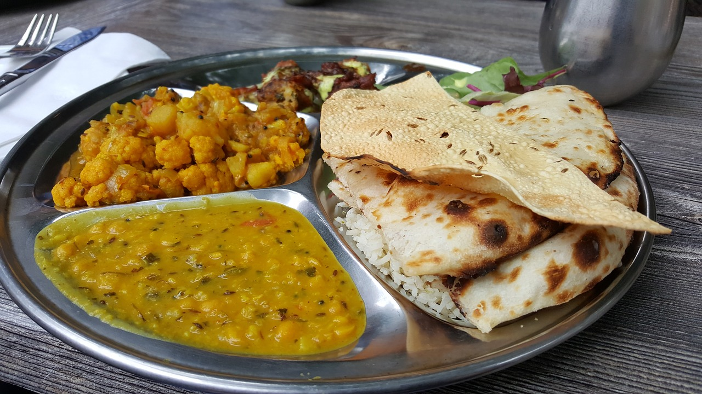

Basil & Spice Homepage
Galway pics & plots
Staff Login

Dhal & Cauliflower Curry
Samosas
Chicken Tandoori
❮
❯
A taste of India in the heart of Galway
Basil & Spice
Contact us: 091 951455 / 085 1112744
A taste of the Med at 152, Quay Street in the heart of Galway